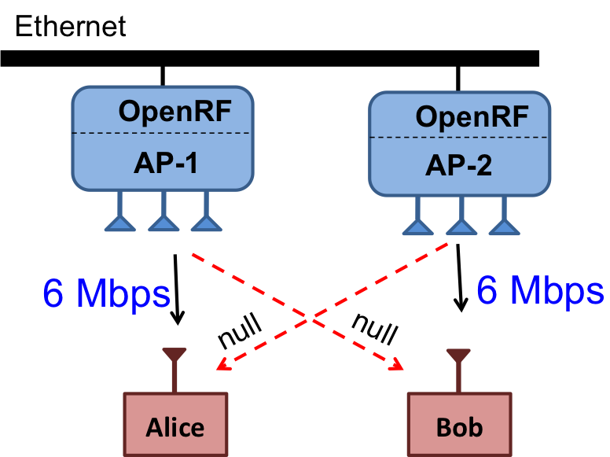

Project OpenRF: Bringing Cross-Layer MIMO to Today's Wireless LANs
|

|
Recent cross-layer MIMO systems have promised significant throughput gains. Yet, these have been demonstrated on software radios as they are considered incompatible with existing Wi-Fi radios and protocols. OpenRF breaks this assumption; it is the first system to show cross-layer MIMO on today's Wi-Fi devices and real applications. OpenRF proposes new formulations of interference alignment, nulling and beamforming designed for 802.11's MAC and PHY. OpenRF has a software defined networking design for self-configurability. OpenRF shows reduced delays and stalls for video applications. |